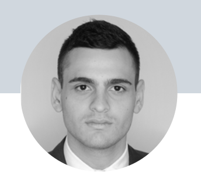

Oscar Durán
Finances/Marketing/Web Developer
Profile
Finances professional with emphasis in Marketing at EAFIT University, bilingual, highly adaptable, great learning capacity, proactive with an orientation for achievement and detail, leadership and good communication skills.
Skills
Programs, tools and/or computer languages
HTML, Matlab, Microsoft Office, Illustrator, Wordpress, VTEX, Shopify, Data Studio, Confluence, JIRA, Power BI, Google Analytics, Postman, Google Tag Manager, PIM, OMS, Open Refine, Filevine, Ringcentral.
Languages
Spanish, English
Labor History
Fondo de Garantías FGA
Professional internship
July 2020 - January 2021
Genius Sports
Live Feed Data Analyst
September 2021 - December 2021
Ecomsur
IT Analyst
December 2021 - February 2023
M&Y Personal Injury Lawyers
Assistant Case Manager
February 2023 - Present
Academic Background
Colegio La Salle, Bucaramanga
Bachelor
February 2006 - December 2015
- Member of the basketball, soccer and volleyball team.
EAFIT University
Finances undergraduate student
2017 - 2021
- Member of the student group UN Society since 2019-1.
- Member of the economics committee of the OE in 2016-2.
- Congress Gerenciar Attendee 2019 - 2022.
- Member of the EAFITMUN organizing comittee 2019, 2020, 2021.
University of Illinois
- Financial Accounting: Foundations
- Financial Accounting: Advanced Topics
University of California, Irvine
- Identifying, Attracting, and Growing your Digital Audience.
University of Colorado, Boulder
- Introduction to the Digital Advertising Landscape.
The Trade Desk Edge
- Programmatic Advertisement.
Contact Me Personal References
LinkedIn GitHub
My Portfolio